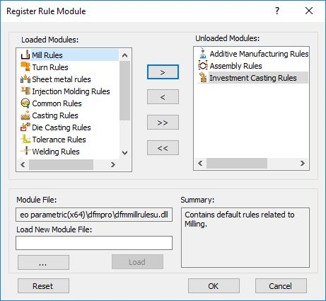
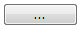
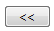
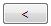
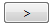

Register Rules Module ボタンをクリックすると、［ルールモジュール登録］ダイアログボックスが表示されます。ルールはカテゴリごとに分類され、異なるモジュールファイルに保存されます。このダイアログボックスでは、解析に応じてルールタイプをカスタマイズできます。
Register Rules Module ボタンをクリックすると、［ルールモジュール登録］ダイアログボックスが表示されます。ルールはカテゴリごとに分類され、異なるモジュールファイルに保存されます。このダイアログボックスでは、解析に応じてルールタイプをカスタマイズできます。ルールマネージャーダイアログボックスで Register Rules Module ボタンをクリックすると、［ルールモジュール登録］ダイアログボックスが表示されます。ルールはカテゴリごとに分類され、異なるモジュールファイルに保存されます。このダイアログボックスでは、解析に応じてルールタイプをカスタマイズできます。
例えば、ミル加工パーツのみを解析する場合には、他のモジュールを解析時に除外することができます。
以下のルールモジュールが DFMPro で使用可能です。

独自ルールモジュール を開発した場合、ユーザーはその DLL を DFMPro に読み込む必要があります。

参照（Browse） ボタンをクリックしてファイルの保存場所を指定します。目的のモジュールファイルを選択し、読み込み（Load） ボタンをクリックします。
すべて読み込み（Load All） ボタンをクリックします。
読み込み（Load） ボタンをクリックするか、対象モジュールをダブルクリックします。
削除（Remove） ボタンをクリックします。